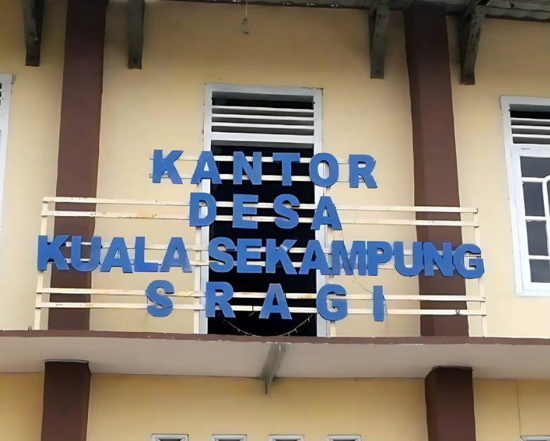

Selamat Datang di Desa Kuala Sekampung, Kecamatan Sragi, Kabupaten Lampung Selatan
×
Desa Kuala Sekampung
Sistem Informasi Desa
Sosial Media Facebook
Peta Administrasi & Guna Lahan Desa
Peta Rawan Banjir Desa
Histrory Plang Jalan Desa
KKN 286 ITERA 2025